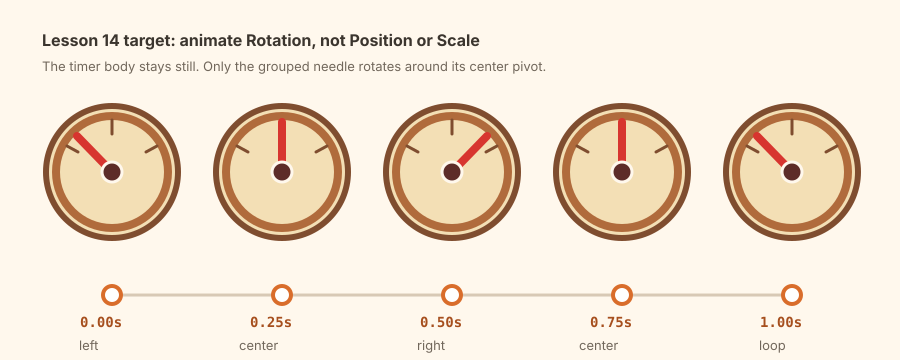

Day 14 - Week 3 animation bridge
14Kitchen timer rotation - animate a swinging needle
You already know how to change Scale. Today the new skill is different: Rotation keyframes. You will build a tiny kitchen timer and animate only its needle, so you learn how pivots control animated turning.
One 1-second looping GIF: a cute kitchen timer with a red needle swinging left, center, right, center, and left again.

Warm up - 30-second recall
Answer first, then open the cards.
What is a keyframe?
Why did Lesson 13 animate a group?
What does a pivot control?
The one new idea - rotation needs the right pivot
A Rotation keyframe stores an angle at a specific time. But rotation is only useful if the part turns around the right point. A timer needle should rotate around the center of the dial, not around one corner of the rectangle.
That gives today a simple rule: set the pivot first, then add Rotation keyframes.
The official Blockbench Overview & Tips page describes Animate mode, the Timeline, the Keyframe
Panel, and keyframe channels. The local Blockbench source also exposes transform channels for
rotation, position, and scale.
Do not animate the whole timer. The timer body is the stage. The needle is the actor.
Settings tutorial - Rotation channel
Keep the Rotation Animation Cheatsheet open.
| Control | Use it today for | Beginner-safe value |
|---|---|---|
| Pivot Tool | Put the needle's turning point at the dial center. | Set before animation. |
| Rotation channel | Save the needle angle over time. | Animate Rotation only. |
| Keyframe Panel | Edit selected keyframe values. | Type Z values if dragging is messy. |
| Interpolation | Control motion between keyframes. | Linear for now. |
| Looped Playback | Check that the needle returns cleanly. | On while previewing. |
Do it with me
-
New Generic Model - name it
Save early. This is a tiny animation study that can still become a pack prop later.kitchen-timer-needle-loop -
Build a simple timer face
Use a flat cube or low-poly cylinder as the timer body. Keep it front-facing. Add a darker rim and three small tick marks so viewers understand it is a dial. -
Build one red needle
Add a thin red cuboid for the pointer. Place one end at the center of the timer face and point the other end upward. Add a small dark hub over the center. -
Group only the moving needle parts
Put the red pointer and center hub in one Outliner group namedtimer_needle_group. Keep the timer body and tick marks outside the group. -
Set the needle pivot to the dial center
Selecttimer_needle_group. Use the Pivot Tool or the pivot fields to put the pivot at the center of the dial. This is the point the needle will rotate around. -
Switch to Animate mode
Add one animation namedtimer_needle_swing. Set the length to1.0s. -
Keyframe 1: left at
Select0.00stimer_needle_group. Move the playhead to0.00s. Add a Rotation keyframe withZ -35. -
Keyframe 2: center at
Move to0.25s0.25s. Add a Rotation keyframe withZ 0. -
Keyframe 3: right at
Move to0.50s0.50s. Add a Rotation keyframe withZ 35. -
Keyframe 4: center at
Move to0.75s0.75s. Add a Rotation keyframe withZ 0. -
Keyframe 5: left at
Move to1.00s1.00s. Add a Rotation keyframe withZ -35. The final angle matches the first angle, so the loop can restart cleanly. -
Preview and debug the pivot
Turn on Looped Playback. If the needle orbits around the timer, stop and fix the pivot before changing keyframes. If the whole timer rotates, you keyed the wrong group. -
Capture a GIF
Keep the camera fixed and record the timer needle swinging. A small, readable loop is enough. -
Post your Day-14 update
Publish the GIF and a short note. Streak: Day 14.
For rotating parts, check the pivot before blaming the Timeline. Most beginner rotation bugs are pivot bugs.
itch.io post (English):
RedNote / 小红书 (中文):
Quick self-check
Say the answer first, then open the card.
What does a Rotation keyframe store?
Why does the timer needle need a centered pivot?
Why keep the final rotation equal to the first?
If the whole timer rotates, what is wrong?
Read the official Blockbench Overview & Tips section on Animate mode, especially the Timeline, Keyframe Panel, and keyframe channels. For the course-specific summary, use the Rotation Animation Cheatsheet and the local UI atlas pages for Keyframe and Timeline.
If the needle rotates around the wrong point, flips like a door, or the whole timer moves, send me a screenshot of the Outliner, Pivot fields, and Timeline. I can tell which setup step is wrong.